This page describes Pipeline Builder's interface, navigational controls, and available tools.
When you open Pipeline Builder, you are presented with a landing page that displays your pipelines and key information about each one. From the landing page, you can:
Select a pipeline from the landing page to open it and access the Edit, Proposals, and History views.
Users can access three different views in Pipeline Builder from the top toolbar: Edit, Proposals, and History.
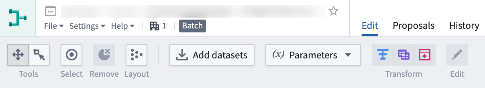
The Edit view is where you can start building your pipeline workflow. It is separated into four sections: the top toolbar, details sidebar, graph, and preview pane.
The top toolbar allows you to manage your views, monitor build check status, and edit build settings.
:::callout{theme="warning"} Changes to a pipeline branch are not auto-saved. To properly save changes to your pipeline branch, you must manually save your changes before navigating away from the graph tab. :::
Create a new proposal: Once your changes are saved, select this option to request a merge into the main branch. Merges from the main branch are not supported.
Deploy: After the pipeline passes validation checks, select Deploy to build your pipeline outputs.
Build settings: Change the compute profile of your build.
Default: The default auto scaling profile which uses the least amount of executor cores and memory.
Large: A slow scale up and quick scale down compute. Builds with larger profiles may complete faster but incur a higher compute cost.
Builds and checks status: View the status of build syncs and check passes and failures.
Share: Open the details sidebar to access sharing options for your pipeline.
The details sidebar allows you to view metadata, access requirements, and roles for your pipeline. Click on the icon in the upper right corner to expand and collapse the sidebar.
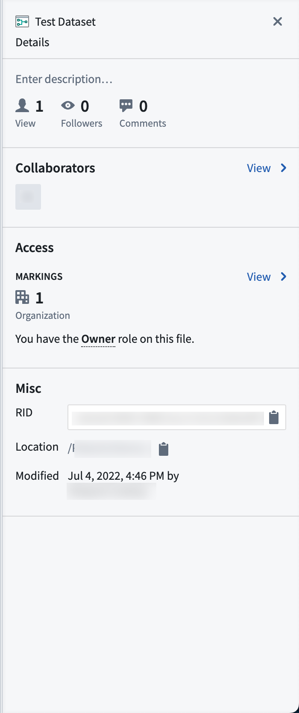
Description: Write or edit a description of your pipeline.
Views: The total number of times your pipeline was viewed in the last 30 days.
Followers: The total number of users following your pipeline workflow progress. Click on this option to follow the pipeline you are currently viewing.
Comments: View and manage comments on your pipeline workflow through the Comments tab. You can add new comments, edit existing comments, comment across different changes, and resolve comments. Select this option to post a comment or view all comments in the sidebar.
Collaborators: The users collaborating on the pipeline. Click View to see when users were added as workflow collaborators.
Access: Shows the organization(s) in which the pipeline belongs and the role you have on the pipeline file. Click View to view and manage access settings.
Access requirements: Displays the organization and Markings requirements needed to access the pipeline.
Check access: Check access requirements for a particular user or group.
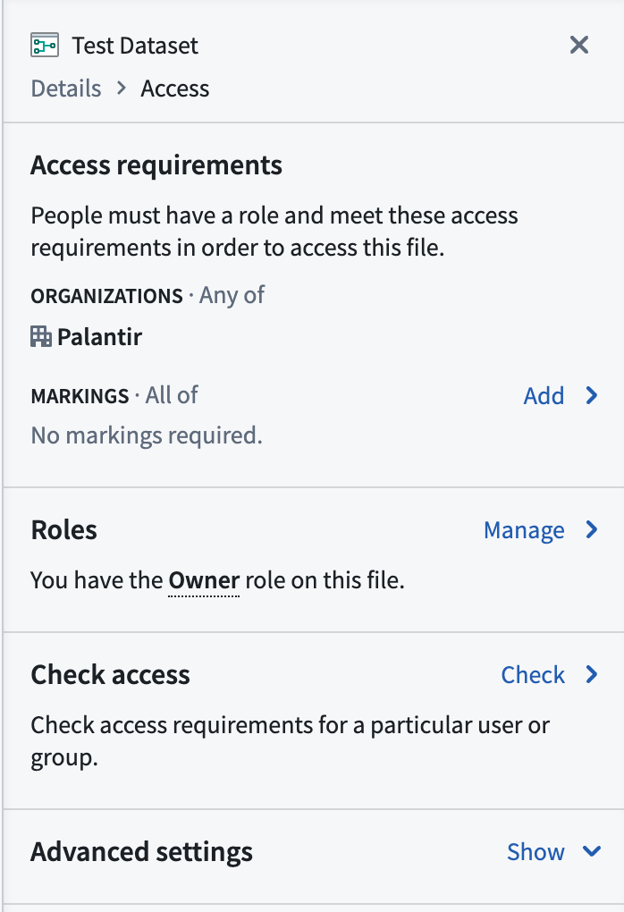
Misc: Shows additional metadata for the pipeline.
The graph is where users add data, create parameters, and describe transforms. It is the primary view of the Pipeline Builder app.
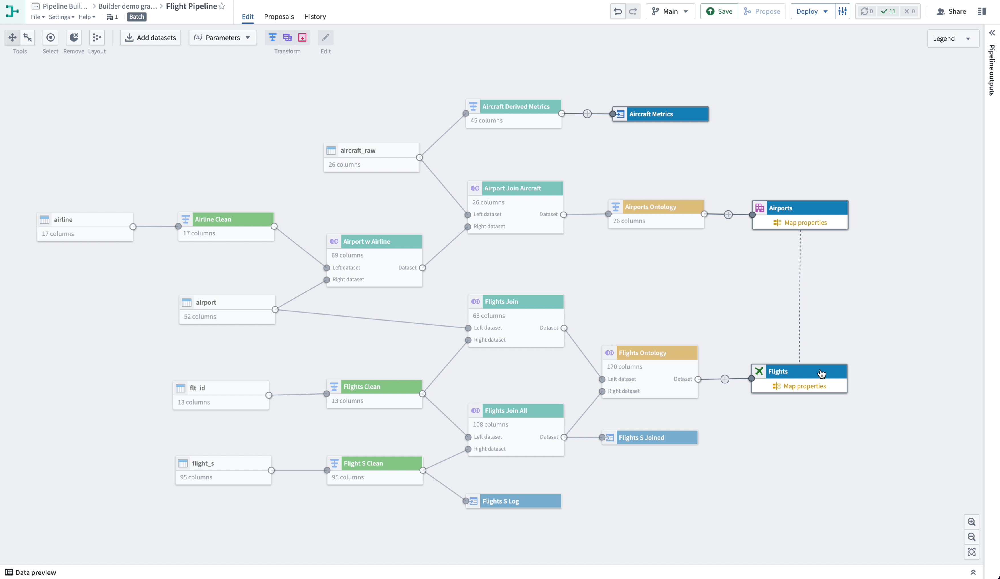
Panning Mode: Allows click and drag navigation around the graph.
Drag Select Mode: Click and drag across the graph to select multiple nodes. To quickly switch to this mode from panning mode, hold down shift while clicking and dragging across nodes.
Select: Select all nodes in the graph.
Remove: Removes selected nodes in the graph from the pipeline.
Layout: Evenly disperse and organize the nodes in your graph.
Add datasets: Open a window to search for and add datasets to your graph.
Parameters: Configure and add reusable transform parameters.
Add parameter: Name a new parameter and assign its value.
Transform: Select dataset nodes in your graph to transform, join, or union. Selecting a dataset on the graph also opens a pop-up menu allowing you to add or edit a transform.
Edit: Select a transform node in your graph to edit transform settings.
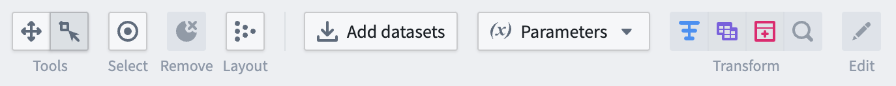
Legend: Show color indicators applied to datasets and transforms.
Add color: Select a new color from the color picker to assign to nodes in your graph.
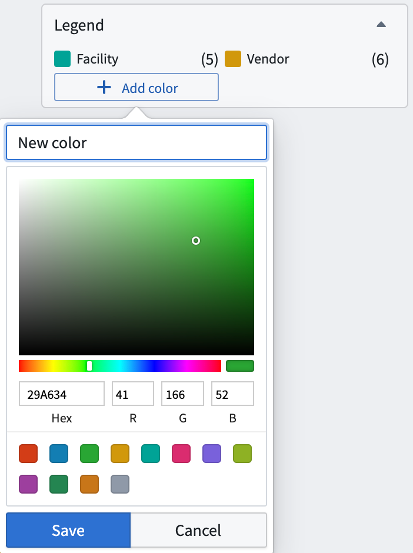
Outputs sidebar: In the sidebar, view build requirements of your pipeline datasets, edit schemas, and add outputs. Use the "expand" symbol on the far right side of the Builder graph to expand the outputs sidebar.
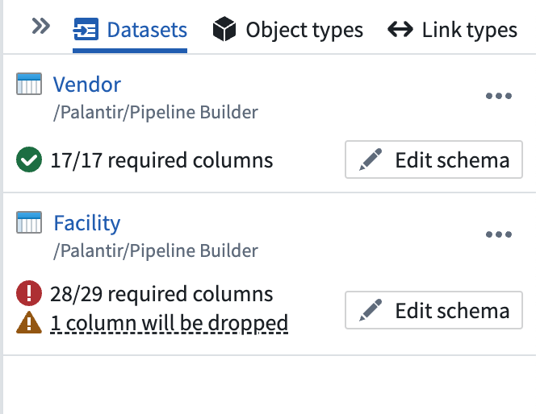
Datasets: Show the dataset outputs described in your pipeline, health verifications, and any schema errors.
Link types: Show the link type outputs that guide your pipeline integration.
Zoom settings: Choose to zoom in, zoom out, or zoom to fit your graph.
Copying Nodes: You can copy and paste nodes between Pipeline Builder deployments and within the same resource using Cmd + C and Cmd + V on MacOS or Ctrl + C and Ctrl + V on Windows. This can be used to duplicate parts of the pipeline or pipelines as a whole.
The preview panel allows you to view a sample set of data from a single selected node. When you select a node, the preview panel opens and automatically runs the logic from raw datasets up until the selected node. Select the icon in the lower left of the graph to expand or contract the preview panel.
You can also access the full dataset preview page by right-clicking on a dataset node and clicking Open.
:::callout{theme="neutral"} You can configure preview behavior in your user preferences to require confirmation before running previews. :::
In the Proposal view, you can see any open, merged, or closed proposals for this pipeline. Choose a filter from the dropdown menu to see all proposals within the status category.
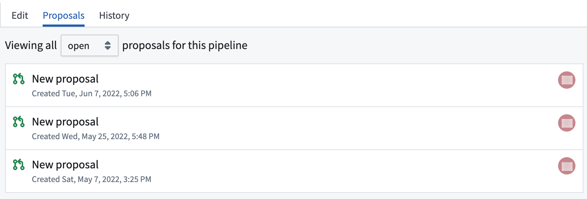
Each proposal will show a create date and time, the user who created it, and an icon denoting an open, merged, or closed status.
Within a proposal, you can view and manage comments through the Comments tab in the sidebar. You can add or modify comments directly within a node diff view, edit existing comments, comment across different changes, and resolve comments to facilitate collaboration during the review process.
The History view allows you to see recent activity in any branch of your pipeline workflow. Select a branch from the dropdown to view its history.
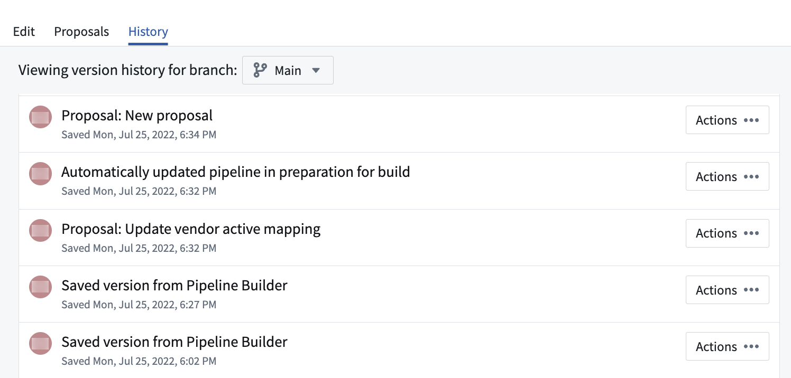
Click Actions to create a new branch, view details, or view changes made from each saved version.
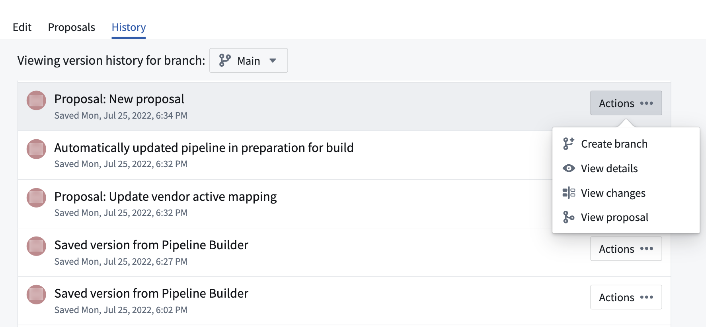
This option allows you to start a new branch based off the selected branch.
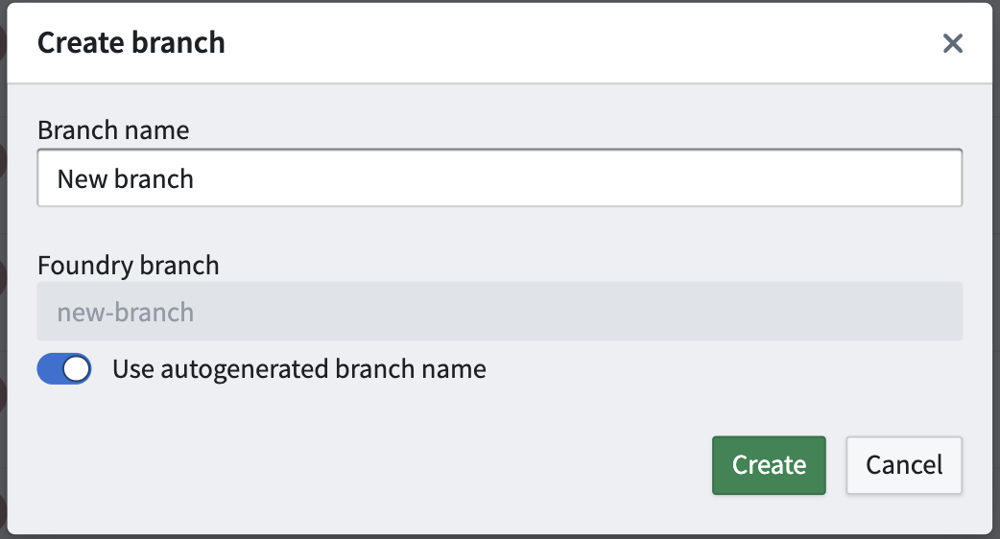
The View details option opens a read-only version of the graph that shows the state of the pipeline at the time of the saved activity. This option is a useful way to track workflow development over time without risking a revert to earlier states of the pipeline.
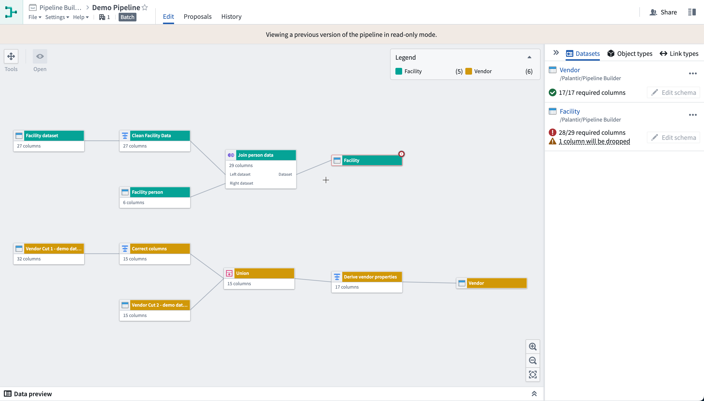
Similar to the View details option, you can View changes to understand pipeline modifications at a given time. In this view, however, the graph shows a split view to represent the differences, or diffs, between the previous save and the applied changes.
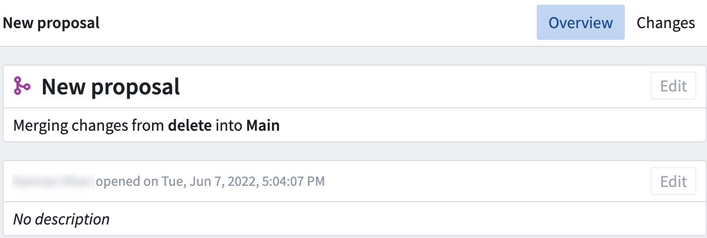
Viewing a proposal allows builders to review and edit existing proposals. In the proposal's Changes tab, you can mark node or setting changes as reviewed and track your progress. The Changes sidebar visually separates reviewed and unreviewed items, checkmark badges on nodes indicate which changes have been reviewed, and a progress bar in the header shows overall review progress. You can mark items as reviewed either from the Changes tab or directly on the graph.
Learn more about viewing pipeline changes.